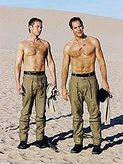
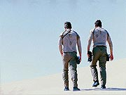
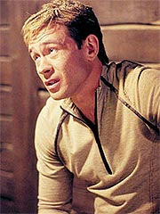
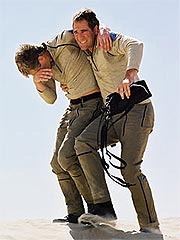
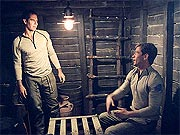
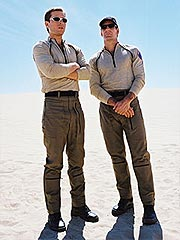
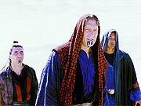
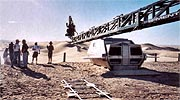
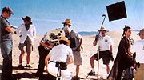

Episódio
anterior | Próximo
episódio
Sinopse:
A Enterprise está novamente a
caminho de Risa, para uma merecida licença para a tripulação,
mas é desviada de seu curso para atender a um pedido de socorro.
Archer concorda em prestar assistência a uma nave alienígena com
problemas. O engenheiro Tucker ajuda a resolvê-los, despertando a
gratidão de Zobral, o líder alienígena. Ele insiste em ter
Archer como convidado de honra dele em um jantar, em seu próprio
planeta. Em princípio, o capitão recusa, mas a insistência é
tanta que ele acaba aceitando a hospitalidade.

Archer
vê na ocasião uma boa chance de estar com seu amigo Tucker. Ele
convida o engenheiro a visitar o desértico planeta alienígena e
acompanhá-lo no jantar de cortesia de Zobral. Trip a princípio
parece reticente --suas lembranças de testes de sobervivência no
deserto com Archer não são muito boas--, mas por fim ele termina
por concordar.
Os dois descem até o planeta, onde são recebidos com toda a
hospitalidade e têm o que, para os padrões daquele povo, é
considerado um banquete. Depois, eles se divertem com os alienígenas
jogando uma partida de um esporte local, chamado Geskana. Enquanto
isso, T'Pol é contatada em órbita por uma autoridade local, o
chanceler Trelit. Falando de uma região afastada de onde Archer e
Tucker estão, Trelit quer saber de T'Pol o que eles estão
fazendo lá. A primeiro-oficial da Enterprise informa o chanceler
de que Archer e Tucker estão lá em uma visita de cortesia, a
convite de um líder chamado Zobral.
Trelit informa que convém que a Enterprise perca as esperanças
por seus oficiais. Segundo ele, Zobral é um líder terrorista.
T'Pol imediatamente contata Archer e passa a informação que
acabou de receber. O capitão não vê grande ameaça por parte de
Zobral e seu povo, mas decide voltar a bordo, por precaução.
Quando ele informa a Zobral que precisa partir, o líder alienígena
se torna agressivo e diz que tudo que disseram a T'Pol é mentira.

Ele
então revela que faz parte de um grupo de excluídos dentro da
sociedade local. Tempos atrás, aquela civilização era dividida
em castas. Pela lei, tal política já foi excluída, mas o
preconceito continua. Segundo Zobral, os membros de sua antiga
casta não têm direitos iguais aos dos outros, e é por isso que
eles lutam. Mas o combate não vai bem, pois as autoridades têm
muito mais poder, força e homens do que eles. É por isso que
Zobral trouxe Archer até lá: para pedir ajuda. Ele tinha ouvido
sobre a reputação do capitão da Enterprise de um mercador
Suliban, que contou a ele a história do explorador-guerreiro que
combateu um exército inteiro e libertou prisioneiros Sulibans das
mãos dos Tandarans.
Quando Zobral termina sua explicação, seu vilarejo começa a ser
bombardeado. O líder local pede que Archer e Tucker se retirem
para um abrigo no subsolo, enquanto seus homens preparam a retaliação.
Os dois concordam, mas acabam tendo de sair quando o próprio
abrigo começa a desabar. Na superfície, eles vêem que o
vilarejo foi totalmente massacrado. Para não serem os próximos
alvos, eles decidem partir e atravessar o deserto até um abrigo
seguro.
Pegando apenas água no shuttlepod, os dois partem para a
travessia. Não leva muito, entretanto, para que Tucker acabe com
sua água e reviva seus pesadelos do treinamento no deserto. O
engenheiro logo está delirando e precisa da ajuda (e da água) de
Archer para permanecer vivo. A Enterprise pede autorização ao
chanceler para resgatar seus oficiais, mas tudo que T'Pol consegue
é que os alienígenas digam que, se um shuttlepod se aproximar da
superfície, será considerado um alvo inimigo. Enquanto isso, uma
nave sai da atmosfera e vai na direção da Enterprise --é Zobral,
pedindo autorização para atracar.

Sem
opção, T'Pol permite que ele venha a bordo. Reed conta ao líder
alienígena o que realmente aconteceu no campo de detenção dos
Sulibans, e Zobral percebe que Archer não é o guerreiro invencível
do qual lhe falaram. Reed, que estava estudando um modo de chegar
à superfície com um shuttlepod sem ser detectado, é informado
de que a nave de Zobral pode subir por um vão estreito na grade
de detecção orbital que aparece a cada 46 minutos e dura um
curto espaço de tempo. Zobral insiste que as manobras técnicas
exigidas para passar pelo vão sem detecção são muito difíceis,
mas T'Pol o convence de sua responsabilidade para com Archer e
Trip, e o alienígena decide ajudar.
No planeta, Archer e Trip finalmente chegam a uma estrutura
abandonada no deserto. O engenheiro luta contra a desidratação e
alucinações causadas pelo calor, e Archer tenta manter seu amigo
consciente, para evitar que ele cai um coma. Sua conversa é
interrompida, entretanto, quando o abrigo é atacado. Eles voltam
a fugir para o deserto e a esperança de sobrevivência parece
pequena.

Antes
de serem alvejados, entretanto, eles são encontrados por T'Pol,
Reed e Zobral em um shuttlepod, que ataca os alienígenas e
resgata os oficiais. T'Pol ajuda os dois a entrarem na nave e então
volta a decolar. Todos voltam à Enterprise, e T'Pol e Archer
desejam boa sorte a Zobral. Embora o capitão reconheça que a
causa de Zobral é justa, ele sabe que não pode se envolver.
A Enterprise retoma seu curso para Risa.
Comentários:
"Desert Crossing" conta com uma boa história,
firmemente calcada em eventos contemporâneos. Infelizmente, o
andamento acaba prejudicando muito a impressão final que temos do
episódio. Tudo vai bem até Archer e Tucker precisarem iniciar a
tal da "travessia do deserto". Aí o episódio adquire
um outro ritmo, que até é adequado para trazer a sensação de
exaustão e tédio da sofrida caminhada da dupla, mas deixa o
telespectador impaciente e insatisfeito.

Não
fosse por isso, o segmento realmente seria muito bom. A história
é interessante e tem paralelos óbvios (mas nem por isso inválidos)
com a atual disputa entre palestinos e israelenses no Oriente Médio.
Além da própria história em si, o visual reforça o
paralelismo: basta citar o fato de Zobral e seus colegas usarem
panos sobre as cabeças (como os árabes) para compensar pelo
calor escaldante (como os árabes) ou o de Trelit falar à
Enterprise com uma parede de pedra bege ao fundo (exatamente como
a maioria das construções em Jerusalém é).
É especialmente audacioso da parte dos produtores pintarem os
alienígenas "palestinos" como os mocinhos, dado o
recente trauma americano com o terrorismo. Não se afirma no episódio
que Zobral e seus homens usem as mesmas táticas dos terroristas
contemporâneos, mas também não há qualquer afirmação ou evidência
em contrário. Apesar disso, eles recebem toda a simpatia por
parte de Archer (e do roteiro).
Claro, fica muito mais fácil fazer algo assim na versão
pasteurizada que Jornada nas Estrelas tem de conflitos e
guerras. Apesar do tema inerentemente violento, o episódio é
conduzido com a costumeira política familiar do franchise, sem
derramamento de sangue ou cenas muito agressivas. Essa pasteurização
torna impossível uma real avaliação (tanto para Archer e cia.
quanto para a audiência) sobre quem tem razão na disputa interna
no planeta.

Isso
seria um ponto negativo do episódio, se sua temática principal
fosse essa. Mas o uso da metáfora Palestina/Israel é apenas o
pano de fundo para o verdadeiro drama do episódio: Archer precisa
lidar com as consequências de seus atos. Ele só está ali,
naquele momento, precisando escolher entre duas facções alienígenas,
porque resolveu libertar os Sulibans da prisão Tandaran (como
visto em "Detained").
O uso da referência a "Detained"
como setup para esta história é um verdadeiro colírio para os
olhos, por duas razões. Em primeiro lugar, porque mais uma vez
volta à premissa da série e aborda o fato de como a inexperiência
de Archer está afetando seu desempenho na missão de exploração
da Enterprise. Isso é algo que os produtores têm procurado
trabalhar desde o início e que aqui cai como uma luva.
Em segundo lugar, porque simplesmente é muito agradável vermos a
continuidade operando. Neste episódio não só temos uma continuação
direta de "Fallen Hero"
(quando o pessoal da Enterprise decidiu ir para Risa) como também
temos referência a "Detained",
mostrando que, diferentemente dos personagens de Voyager,
os tripulantes da Enterprise não se esquecem tão rápido do que
aconteceu na semana passada. Ponto positivo para os produtores.

É
uma pena aqui que todo esse trabalho não tenha se convertido em
benefício para os personagens. Os principais dessa sequência,
Archer e Tucker, não saem nem um pouco melhores do que entraram.
É interessante vermos a amizade dos dois e sua relação
profissional se sobrepondo, principalmente em uma situação
extrema, como a sobrevivência num deserto, mas não há nada que
faça os dois crescerem. A única coisa sobre os personagens que
vale a pena realmente ser observada vem com Archer, muito mais
pelo bom desempenho de Scott Bakula do que pelo roteiro.
O ator consegue transmitir de forma bastante clara a sensação do
capitão de que ele não tem a menor idéia do que seria a coisa
certa a fazer. Ele decide por não ajudar Zobral ao final do episódio,
mas sua decisão é muito mais baseada no fato de que suas ações
podem ter repercussões imprevisíveis (como aconteceu em "Detained")
do que na justiça da situação em si. Ou seja, a Primeira
Diretriz, em espírito, já está consolidada na mente de Archer,
por mais que ele se sinta desconfortável com ela. Essa evolução
do modo de pensar do capitão, nascida de forma um tanto
artificial em "Dear Doctor",
aqui se encaixa perfeitamente.

O
resto do elenco cumpre apenas sua obrigação, mas o roteiro nem
se esforça em dar muito para eles fazerem. O episódio é mesmo
de Archer e Tucker. E, claro, de Zobral. Clancy Brown faz um
excelente trabalho encarnando o "Yasser Arafat pasteurizado
de Jornada" --um líder excepcionalmente carismático, simpático
e aparentemente justo. Assim como aconteceu com Archer, é difícil
a audiência não ver com bons olhos esse sujeito.

O
diretor David Straiton faz um belíssimo trabalho à frente do
episódio. Até as cenas da travessia no deserto, apesar de
sonolentas, poderiam ter sido muito piores, não fosse o
competente trabalho de posição das câmeras executado pelo
diretor (quantas formas diferentes de filmar dois caras andando
pelo deserto no meio de lugar nenhum você consegue imaginar?). E
a sequência da turma jogando Geskana é sensacional, ajudada também
por uma trilha sonora excepcionalmente criativa, que consegue
conciliar a sensação de prática esportiva com costume alienígena.
Parabéns ao músico Velton Ray Bunch.
No fim das contas, "Desert Crossing" é um bom
episódio. Não tão bom quanto poderia ter sido, mas ainda assim
consistente e com bom uso da continuidade da série. Se não fosse
por tantas andanças e por infinitas dunas de areia...
Citações:
Archer - "Even
if I were the warrior you thought I was, that's not why we're out
here."
("Mesmo que eu fosse o guerreiro que você pensou que eu
fosse, não é por isso que estamos aqui.")
Zobral - "I wouldn't be a very good host if I allowed you
to get killed."
("Eu não seria um anfitrião muito bom se eu permitisse que
vocês fossem mortos.")
Trivia:
 O episódio conta com uma aparição ilustre, mas discreta. Três
marinheiros reais do porta-aviões americano USS Enterprise
participaram do episódio como tripulantes figurantes da ponte.
Foram eles Robert Pickering, Timothy Whittington e Sara Elizabeth
Pizzo.
O episódio conta com uma aparição ilustre, mas discreta. Três
marinheiros reais do porta-aviões americano USS Enterprise
participaram do episódio como tripulantes figurantes da ponte.
Foram eles Robert Pickering, Timothy Whittington e Sara Elizabeth
Pizzo.
O ator Clancy Brown é mais conhecido do público por seus papéis
em "Highlander" e "Starship Troopers". Charles
Dennis apareceu antes em Jornada como o comandante Sunad, em "Transfigurations"
(da terceira temporada de A Nova Geração).
Scott Bakula falou sobre o episódio pouco depois da produção.
"Estamos em ritmo de deserto", disse. "Fomos a um
deserto real. Nos divertimos, mas foi uma loucura. Há um deserto
no sul da Califórnia, pertinho do México. Parece o Saara. É
inacreditável. Foi ótimo."
Em um bate-papo com os fãs, Andre Bormanis também contou um
pouquinho sobre os bastidores do episódio. "Eu escrevi o
roteiro do episódio 24, baseado em uma história desenvolvida por
Rick [Berman] e Brannon [Braga]. Fizemos uns dois dias de
filmagens no deserto, o que ficou ótimo. Sem contar demais,
suponho que posso dizer que o episódio explora o impacto de
algumas das decisões anteriores de Archer em suas interações
com certas culturas alienígenas."
Ficha
técnica:
História de Rick Berman
& Brannon Braga &
Andre Bormanis
Roteiro de Andre Bormanis
Direção de David
Straiton
Exibido em 08/05/2002
Produção:
024